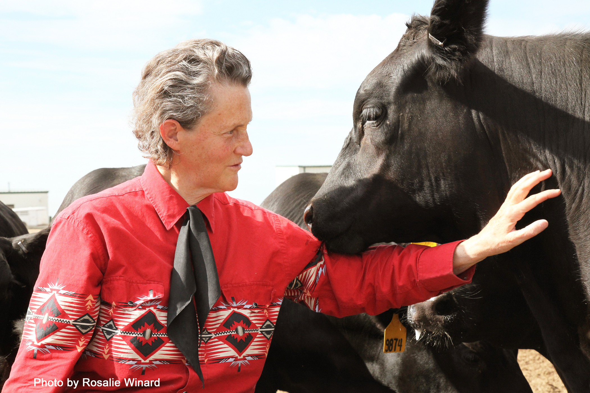
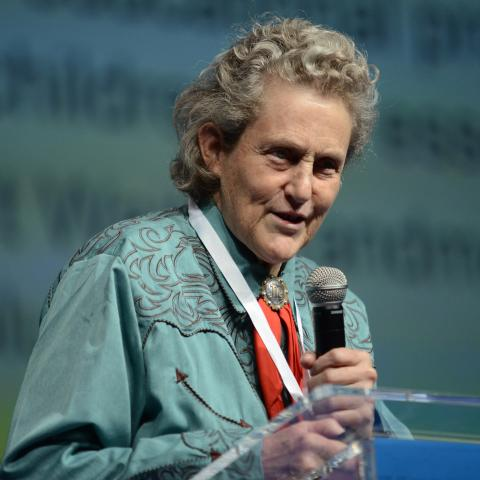

Biography
Temple Grandin is American scientist and industrial designer whose own experience with autism funded her professional work in creating systems to counter stress in certain human and animal populations.
Grandin was unable to talk until age three and had many behavioral problems. She was later diagnosed with autism. Her parents, rejecting a doctor’s advice to place her in an institution, instead sent their daughter to a series of private schools where her high IQ was nurtured. After graduating with a bachelor’s degree in 1970 in psychology from Franklin Pierce College in New Hampshire, she earned a master’s degree in 1975 and a doctorate in 1989 in animal science from Arizona State University and the University of Illinois at Urbana-Champaign. In 1990 she taught animal science at Colorado State University in Fort Collins, where she also managed Grandin Livestock Systems.
Grandin was born with hypersensitivity to sound and touch which is common both to autistic people and to animals, and she devoted her life to devising systems to alleviate the anxiety of both groups. While still in high school, she designed a “squeeze machine” to relieve her own nervous tension, modeling it on a chute fashioned to hold livestock in place during brandings, vaccinations, and other procedures. Improved versions of her machine were widely used not only in schools to soothe autistic children but also by autistic adults to comfort themselves.